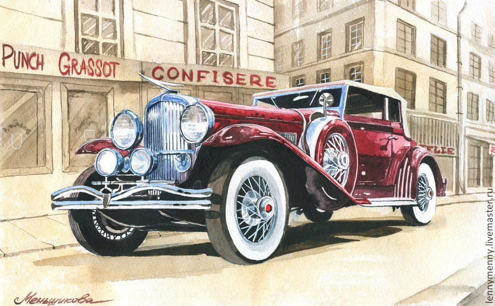

The story of modern machines can be counted from 1768, when the first wagon was created, which was moved by steam. In 1806, the light saw the first internal combustion engine, but it took nearly 70 years for humanity to put it on a trolley and use it for its own movement. These and other equally interesting facts about inventors and the most famous auto brands are collected in the section "Retro cars". With what began this or that brand, which brought her success and what significant events contributed to the development of modern cars. We talk about retro cars, the process of their evolution, we find previously unknown details about the development of engineering. Beautiful photos of retro cars, fascinating stories and interesting facts about retro cars - that's not all that you can learn from this section. Today retro cars acquire a second life, they are taken care of, they are photographed and even create special museums. Therefore, this section will certainly be interesting both for retro lovers and for all motorists.
More examples on the Examples page
